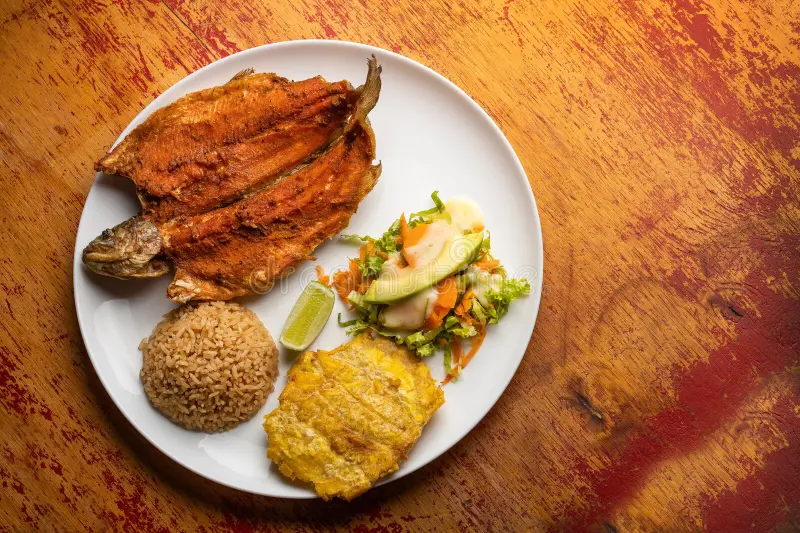
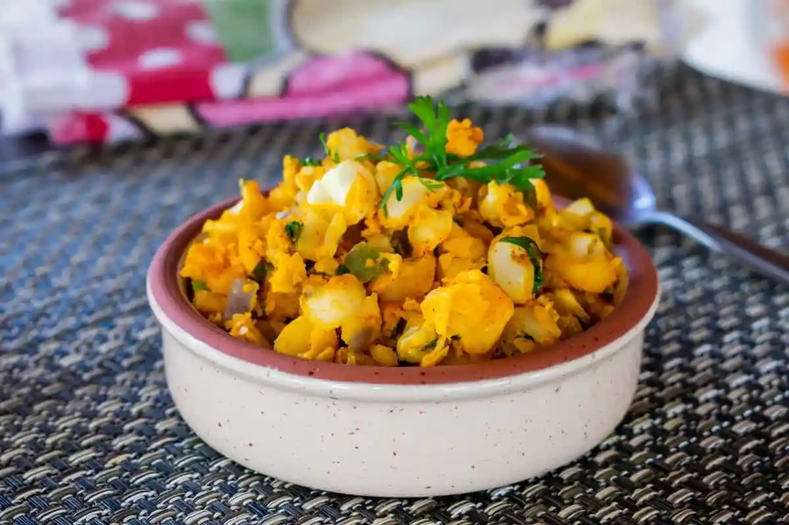

Bienvenidos a Silvia
silvia es un hermoso municipio Colombiano ubicado en el departamento del Cauca, reconocido por sus paisajes montañosos, clima frio y la riqueza cultural de sus pueblos originarios.
¡Ven y conoce la magia, artesanias y arquitectura colonial de nuestro municipio!
Gastronomía Tipica
Disfruta de los sabores autoctonos de nuestra tierra preparados con ingredientes frescos de la montaña.

Trucha Arcoíris
Fresca trucha cultivada en las frías aguas de la región, servida con patacón y ensalada.

Mote de Maíz
Sopa tradicional preparada a base de maíz pelado con especias autóctonas y carne.

Café de Altura
Café de origen cultivado en las laderas andinas con notas suaves y aroma profundo.
Atractivos Turísticos
Descubre destinos naturales e históricos inolvidables en tu visita a nuestra región.
El mercado tradicional de los martes y la laguna de Piendamó son paradas obligatorias para todo visitante.